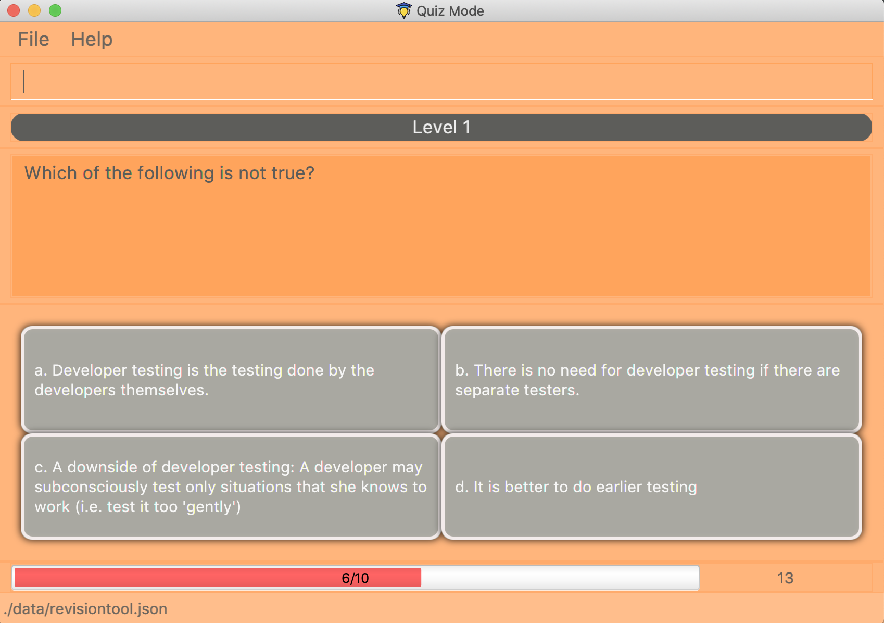

By: Team F10-3 Since: Aug 2019 Licence: MIT
1. Introduction
This portfolio provides an overview of the CS2103/T Revision Tool and highlights my contribution in the project including a brief description of the key features that I implemented.
1.1. The Team
Our team of 5 consists of 2 Year 4 Engineering Science students, a Year 4 Industrial & Systems Engineering student, a Year 3 Communications and New Media student and myself, a Year 2 Computer Science / Business student.
1.2. About the Project
This 7-week project was started as part of NUS' Software Engineering (CS2103/T) module. The team was required to to either morph or enhance an existing application (Address Book - Level 3). Our team decided to morph the project into the CS2103/T Revision Tool (RT) a desktop quiz application which allows users to create customised question banks and attempt the quizzes in an interactive manner. The user interacts with it using a CLI, and it has a GUI created with JavaFX. It is written in Java, and has about 14 kLoC.


2. Summary of contributions
As the Team Lead of the project, my role was to ensure that the team met the milestones and to coordinate the integration of the entire application. Furthermore, I developed the main driver for the Quiz Mode in the application which was the backbone of many of the other features.
-
Major enhancement: added the main driver for the quiz
-
What it does: After entering quiz mode, the driver parses user input, determines whether the answer is correct and displays the next question. At the end of each level and the entire quiz, the user is shown his/her score and given the choice to continue (i.e. proceed to the next level or restart) or exit the quiz.
-
Justification: This essential feature is the core of the application and allows other features to be built upon it. Furthermore, it significantly improves the product as it adds the element of interaction to the application.
-
Highlights: This enhancement required the deep understanding of the entire project structure as it can be considered the nervous system that connects the application from UI to Storage. Other functionality such as answering MCQs, True & False or Short-Answer Questions (SAQ) were built upon this feature. This feature was also tested using automated GUI tests.
-
Credits: Code for the GUI display was adapted from Address Book – Level 3 and the structure for GUI tests was adapted from Address Book - Level 4.
-
-
Minor enhancements:
-
Created the Normal and Arcade mode for the quiz. In Arcade Mode, each level has increasing difficulty and a shorter time limit, whenever a user gets a question wrong, the quiz ends and the user has to restart.
-
Created the abstract
AnswerableClass for subclasses such asMCQ,TrueFalseandSAQclasses to be built upon using the factory design pattern. -
Added an interactive progress bar for each level in the quiz.
-
Implemented the adaptable UI for each type of question’s answers (i.e. allowing the GUI to change from displaying 4 panels for MCQs to 2 panels for True & False questions).
-
-
Code contributed: You can view the code I contributed to this project here
-
Other contributions:
-
Project management:
-
Managed release v1.4 on GitHub
-
Managed issues and resolved the main bulk of the post Mock PE issues.
-
-
Enhancements to existing features:
-
Wrote additional GUI tests to increase coverage from 50% to 75% (PR #158, #161, #163)
-
Updated the GUI colour scheme and added aesthetic artifacts such as level label (PR #98, #148)
-
Created skeleton class for
AnswerableBuilderusing Java Generics and builder design pattern so that my teammates will be able to build upon it easily (PR #148, #149)
-
-
Documentation:
-
Created skeleton sequence and activity diagrams for the team to reuse so that the DG can have a more congruent look.
-
Added all the use cases for the project.
-
-
Community:
-
Reviewed this PR.
-
Helped a fellow student in this forum post.
-
-
3. Contributions to the User Guide
Given below are sections I contributed to the User Guide. They showcase my ability to write documentation targeting end-users. |
3.1. Starting the quiz: start.
User can start by choosing the mode of the quiz. (normal / arcade / custom). See Section 4, “Quiz Mode” for in-quiz commands.
Format: start mode/MODE
|
To start all questions in the question bank, use command start mode/normal |
Examples:
-
start mode/normal -
start mode/custom cat/uml /diff/1 timer/20
3.2. Adding a question: add
Adds a question to the question bank
Format: `add type/TYPE q/QUESTION cat/CATEGORY diff/DIFFICULTY y/CORRECT_ANSWER x/WRONG_ANSWER… `
Examples:
-
add type/mcq q/According to the textbook, which kind of project is more difficult? cat/Week 2 diff/1 x/Greenfield x/Brownfield y/None of the others x/Padifield -
add type/tf q/OODMs are Class Diagrams cat/uml diff/2 y/true -
add type/saq q/What does UML stands for? cat/cs2103 diff/1 y/unified modeling language
3.3. Editing a question : edit
Edits an existing question in the question bank.
Format: edit INDEX [q/QUESTION] [cat/CATEGORY] [diff/DIFFICULTY] [x/WRONG_ANSWER]… [y/CORRECT_ANSWER]…
Examples:
-
edit 1 q/According the the textbook, is greenfield or brownfield tougher?
Edits the the first question to "According the the textbook, is greenfield or brownfield tougher?"
4. Quiz Mode
4.1. Normal Mode
Levels are separated by difficulty. At the end of each level, user has the choice to move on to the next level or exit the quiz. The user is given 30 seconds to answer each question.
4.2. Arcade Mode
Levels are separated by difficulty. If the user enters a wrong answer before finishing the quiz. The quiz will end and display the results. The user is given 30 seconds to answer each question in level 1. Subsequent level timers are 5 seconds faster than the previous level with level 3 giving the user 20 seconds to answer each question.
4.3. Custom Mode
Category, Difficulty and Timer (must be above 1 second) can be customised by the user. Levels are also sorted according to
difficulty.
4.4. Answering Questions
MCQ |
TrueFalse |
SAQ |
Answers can only be A, B, C, or D (Case insensitive) |
Answers can only be True (T) / False (F) (Case insensitive) |
Answers are open ended. Revision tool uses NLP to parse answers and determine whether they are correct. |
5. Command Summary
-
Help :
help -
Start
start mode/MODE
e.g.start mode/normal -
Exit
exit -
Status :
status -
Add
add type/TYPE q/QUESTION cat/CATEGORY diff/DIFFICULTY y/CORRECT_ANSWER x/WRONG_ANSWER…
e.g.add type/mcq q/According to the textbook, which kind of project is more difficult? cat/Week 2 diff/1 x/Greenfield x/Brownfield y/None of the others of the above x/Padifield -
Edit :
edit INDEX [q/QUESTION] [cat/CATEGORY] [diff/DIFFICULTY] [x/WRONG_ANSWER]… [y/CORRECT_ANSWER]…
e.g.edit 1 q/According the the textbook, is greenfield or brownfield tougher? -
Delete :
delete INDEX [MORE_INDICES]
e.g.delete 1 3 5 -
List :
list [cat/CATEGORY] [diff/DIFFICULTY]e.g.list cat/requiments diff/2 -
Find :
find KEYWORD [MORE_KEYWORDS]
e.g.find user story -
Clear :
clear -
Restore :
restore
Appendix A: Use Cases
(For all use cases below, the System is the RevisionTool and the Actor is the user, unless specified otherwise)
Use case (UC01): Add answerable
MSS
-
User requests to add an answerable
-
RevisionTool adds the answerable
Use case ends.
Extensions
-
2a. The answerable already exists in the list.
-
2a1. RevisionTool shows an error message.
Use case ends.
-
-
2a. Any of the parameters provided are invalid.
-
2a1. RevisionTool shows an error message.
Use case ends.
-
Use case (UC02): Delete answerable
MSS
-
User requests to list answerables
-
RevisionTool shows a list of answerables
-
User requests to delete a specific answerable in the list
-
RevisionTool deletes the answerable
Use case ends.
Extensions
-
2a. The list is empty.
Use case ends.
-
3a. The given index is invalid.
-
3a1. RevisionTool shows an error message.
Use case resumes at step 2.
-
Use case (UC03): Start Quiz in Normal Mode
MSS
-
User requests to start quiz in Normal Mode
-
RevisionTool shows the Quiz Mode window with the first question displayed.
-
User enters his input into the command box.
-
RevisionTool checks the input and records the result of the answer (i.e. whether correct or not).
-
RevisionTool displays the next question. Use case resumes at step 3.
Use case ends.
Extensions
-
1a. The list of questions for the quiz is empty.
Use case ends.
-
3a. The given input is invalid.
-
3a1. RevisionTool shows an error message.
Use case resumes at step 3.
-
-
3c. User inputs an exit command.
Use case ends.
-
5a. The current level of the quiz has ended.
-
5a1. RevisionTool prompts the user to continue or end the quiz.
-
5a2. User chooses to proceed to the next level.
Use case resumes at step 5.
-
-
5b. The current level of the quiz has ended.
-
5b1. RevisionTool prompts the user to continue or end the quiz.
-
5b2. User chooses to end the quiz.
Use case ends.
-
-
5c. The entire quiz has ended.
-
5c1. RevisionTool prompts the user to restart or end the quiz.
-
5c2. User chooses to restart the quiz.
Use case ends resumes at step 2.
-
-
5d. The entire quiz has ended.
-
5d1. RevisionTool prompts the user to restart or end the quiz.
-
5d2. User chooses to end the quiz.
Use case ends.
-
-
*a. Time available to answer each question of the quiz runs out (30 seconds for Normal Mode).
-
*a1. RevisionTool marks the question as wrong.
Use case resumes at step 5.
-
|
For Custom Mode, the use case is the same except timer can be customised. For Arcade Mode, an extension 4a will be added. If the user gets the question wrong, the quiz will end and the User will be prompted to restart or end the quiz. |
6. Contributions to the Developer Guide
Given below are sections I contributed to the Developer Guide. They showcase my ability to write technical documentation and the technical depth of my contributions to the project. |
6.1. The Answerable Class

The main class that the Revision Tool operates on is the Answerable class.
Each Answerable class must have 1 Question, 1 Difficulty and can have any amount of categories associated with it.
The amount of answers that an Answerable can have depends on its type.
There are 3 subclasses of the Answerable Class which are: Mcq, TrueFalse and Saq. Each class defines it’s
own rules on the validity of Answer s (highlighted in red in the class diagram) provided to it.
The following are the rules of validity for each subclass:
-
Mcq: 4 answers in total. 1 correct answer, 3 wrong answers.
-
TrueFalse: Either 'true' or 'false' as its answer.
-
Saq: Any amount of answers.
For all subclasses, there cannot be any duplicates of answers. For example, if an Mcq class has "option1" as one of its wrong answers, it cannot have "option1" as its correct answer or another wrong answer.
6.2. Managing parsing in Configuration and Quiz Mode (Overview)
The Revision Tool uses two Parser interfaces (Parser and QuizParser) to parse different sets of commands (i.e. in Configuration Mode and in Quiz Mode).

As shown in the figure above, the ParserManager class is responsible for creating the respective parsers for Configuration and Quiz Mode.
This was designed while taking into consideration that the Quiz Mode Parsers (i.e. XYZParsers) will require
an extra Answerable argument on top of the user input String in order to carry out commands such as determining whether the user’s input is the correct answer.
(E.g. to call methods such as Answerable#isCorrect(Answer))
As different commands are accepted in Configuration and Quiz Mode, the ParserManager class uses overloaded methods
(parseCommand(String) and parseCommand(String, Answerable) to determine the valid commands in each mode. If a Configuration Mode
command such as add were to be used in Quiz Mode, the ParserManager would deem the the command as invalid.
With reference to Figure 6, The following are the parsers used in each mode:
-
ABCParser (Configuration Mode):
-
AddCommandParser
-
DeleteCommandParser
-
EditCommandParser
-
FindCommandParser
-
ListCommandParser
-
StartCommandParser
-
-
XYZParser (Quiz Mode):
-
McqInputCommandParser
-
TfInputCommandParser
-
SaqInputCommandParser
-
A more detailed description of the implementation of parsing in Configuration and Quiz Mode and its design considerations can be found in Section 6.3, “Configuration and Quiz Mode”.
6.3. Configuration and Quiz Mode
As different commands are available for Configuration and Quiz Mode, we have to determine which commands are valid based on the state of the application. To implement this, we had to examine two main design considerations: The structure of the parser component and how to determine which parser to use. We will discuss these considerations in the following segment.
6.3.1. Design Considerations
Aspect |
Alternative 1 |
Alternative 2 |
Conclusion and Explanation |
Structure of the Parser Component |
Command parsers for both modes implement the same interface (i.e. implement both |
Command parsers belonging to each mode implement different interfaces (i.e. a |
Alternative 2 was implemented. The main reason for this choice was to adhere to the interface-segregation principle. If alternative 1 were to be implemented, a Configuration Mode command may have to implement a parse(String, Answerable) dummy method which it will not use. This is bad design as a client might be able to call the dummy method and receive unexpected results. Thus, by separating the interfaces, clients will only need to know about the methods that they need. |
Determining which parser to use |
Create two parser manager classes (i.e. |
Use a single |
Alternative 2 was implemented. By doing so, we were able to adopt a facade design pattern. The main benefit would be that
the client doesn’t need to know the logic involved in selecting which type of parser and logic to use. This hides the internal
complexity of the |
6.3.2. Commands in Configuration Mode
In Configuration Mode, a single string is passed as an argument to the Logic#execute method (i.e. execute(String)).
Given below is the Sequence Diagram for interactions within the Logic component for the execute("delete 1") API call.

delete 1 Command
The lifeline for DeleteCommandParser should end at the destroy marker (X) but due to a limitation of PlantUML, the lifeline reaches the end of diagram.
|
6.3.3. Commands in Quiz Mode
In Quiz Mode, a string and the current Answerable object are passed as arguments to the Logic#execute method. (i.e. execute(String, Answerable))
Given below is the Sequence Diagram for interactions within the Logic component for the execute("c", answerable) API call.
c input command.6.3.4. Key differences between Configuration Mode and Quiz Mode:
Configuration Mode |
Quiz Mode |
Logic#execute takes in a single string. |
Logic#execute takes in a String and an Answerable. |
No methods of |
|
|
|
|
|
6.3.5. Implementation of CommandResult (Builder Design Pattern)
The CommandResult class is designed using a builder pattern to allow flexibility of values returned to the LogicManager.
To guard against null values, default values are provided to every field in the CommandResult class upon construction.
Objects that call CommandResult can choose to customise CommandResult according to their needs.
Below is a code snippet of the CommandResultBuilder and CommandResult class:


Examples of how to build a CommandResult:
CommandResult c = new CommandResultBuilder().withFeedback(message).withExit(true).build(); CommandResult c = new CommandResultBuilder().isCorrect(true).build();
6.3.6. How the quiz works
After the user has start ed the quiz, the application enters Quiz Mode. The following is the flow of events after a quiz
session has started.

NormalModeElaboration of Steps:
-
After the user has started a normal mode quiz. He/she will be prompted to key in their answer.
-
If the input is valid, the revision tool will display the subsequent question until the level / entire quiz has ended.
-
If the input is invalid, the revision tool will prompt the user to key in their input again with guidance provided on the commands accepted.
-
If the time limit is exceeded (e.g. 30 seconds in Normal Mode), the revision tool will mark the question as wrong and move on to the next question.
-
Once a level has ended, the user will be given the choice to move on to the next level or exit the quiz.
-
Once the entire quiz has ended, the user will be given the choice to restart or exit the quiz.
|
For Custom Mode, the game play is the same except that user can choose the category and difficulty of questions. For Arcade Mode, when a users enters a wrong answer, the quiz will end. |